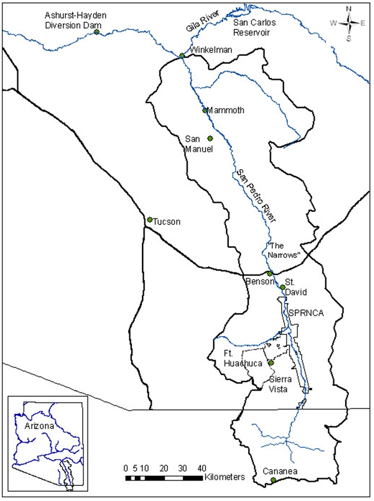

Case Study: San Pedro River
At a glance
Primary Partner: U.S. Geological Survey, Bureau of Land Management
Completed: Summer 2011
Models: Carbon sequestration and storage, water supply, aesthetic viewsheds, open space proximity, recreation
Maps: Source, sink, use, and flow maps for above ecosystem services
Highlights: Application of ARIES to a binational watershed of high conservation significance in an arid/semiarid region. Testing of ARIES’ applicability for ecosystem services-based decision-making for federal land management agencies.
Practical application
Much of the Upper San Pedro River’s riparian corridor is managed by the Bureau of Land Management (BLM)’s San Pedro Riparian National Conservation Area, yet the perennial flow supporting these reaches is threatened by groundwater withdrawals. The project site was chosen as a test case to evaluate alternative ecosystem services modeling and valuation tools for the BLM, and included an evaluation of ARIES models. Ideally ecosystem services assessments could thus inform decision making for the BLM in the San Pedro watershed, agency-wide, as well as for other federal agencies charged responsible for public land management.

The San Pedro River, which flows north from Sonora into Arizona, is internationally recognized for its high biodiversity and ecological significance. A long history of scientific research in the watershed exists to support ecosystem services research on the watershed.
StepsAn initial stakeholder meeting was held to prioritize ecosystem services for analysis. These included water, carbon, biodiversity, and cultural services. From this list, we developed a list of concrete beneficiary groups for mapping and valuation. For example, we identified water for agriculture, mining, domestic use, and the military as separate beneficiary groups. We built models to identify areas that provide ecosystem services (sources), locate beneficiaries on the landscape (uses), and identify “sink” features that biophysically alter ecosystem services characteristics. Agent-based flow models then link beneficiaries to ecosystems providing the services, showing the strength of dependencies on ecosystem services and opportunities to protect or improve ecosystem service flows. This work has also included iterative model reviews with experts to improve the quality of the data sources, models, and outputs and with decision makers to improve the usefulness of outputs for decision making. Completion of this project is set for Summer 2011, and will include the release of a publicly available USGS Professional Paper detailing the strengths and limitations of alternative ecosystem services valuation and modeling tools.
|